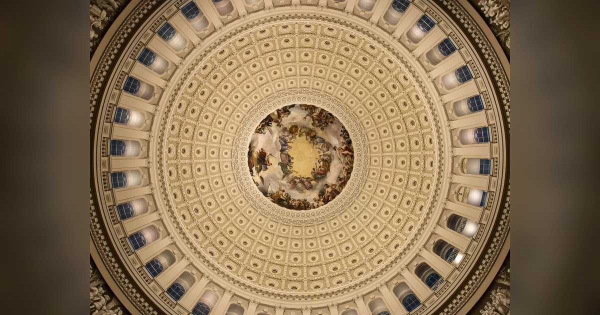

미국 중간선거 투표 시작, 한국시간 개표는 4일 오전부터
미국에서 11월 3일 현지시간으로 중간선거 본투표가 시작됐습니다. 한국시간 11월 4일 00시 19분 기준으로는 투표가 진행 중입니다.
사진: Architect of the Capitol · 원본

미국에서 11월 3일 현지시간으로 중간선거 본투표가 시작됐습니다. 한국시간 11월 4일 00시 19분 기준으로는 투표가 진행 중입니다.
사진: Architect of the Capitol · 원본